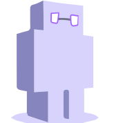

Skip to content

Robo
Search
K
Main Navigation
Robo Documentation
Getting Started
Collection
Extending
Robo as a Framework
Tasks
ApiGen
Archive
Assets
Base
Bower
Composer
Development
Docker
File
Filesystem
Gulp
Logfile
Npm
Remote
Testing
Vcs
Changelog
Appearance
Menu
Return to top
On this page
Robo Documentation
Getting Started
Collections
Extending
Robo as a Framework
Tasks
ApiGen
Archive
Assets
Base
Bower
Composer
Development
Docker
File
Filesystem
Gulp
Npm
Remote
Testing
Vcs